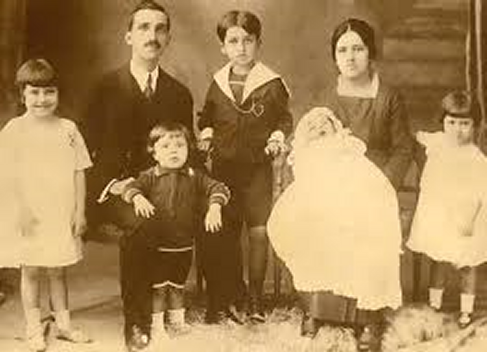
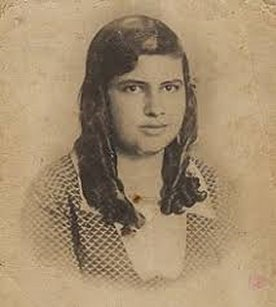
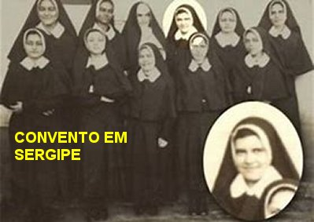

“RECEBEU O SAGRADO HÁBITO”
A FAMÍLIA
Augusto Lopes Pontes era o pai de Irmã Dulce. Ele nasceu em Abril
de 1889, e formou-se em Odontologia na Universidade Federal da Bahia. Media 1,60
de altura, 
Maria Rita (a futura Irmã Dulce) não cresceu em altura na medida dos irmãos, permaneceu com uma pequena estatura de 1,48 metros, e por isso ganhou o apelido de “Mariinha”. Ela nasceu no dia 26 de Maio de 1914 à Rua São José de Baixo, 36, no Bairro Barbalho na freguesia de Santo Antonio Além do Carmo, em Salvador. Foi Batizada na Igreja de Santo Antonio Além do Carmo, no dia 13 de Dezembro de 1914.
Era uma família bem unida e muito religiosa. A mamãe Dulce não descuidava de orientar os filhos, ensinando-lhes a percorrer com segurança os caminhos da vida. E em muitas oportunidades, lhes explicava a necessidade de rezarmos e de procurarmos viver uma existência fraterna e responsável junto a DEUS. Isto porque, todos nós, a humanidade de todas as gerações nasce pela Vontade DELE. Foi ELE QUEM nos proporcionou a vida. Os pais, em todas as famílias, são os verdadeiros auxiliares de DEUS, através do Sacramento do Matrimônio quando encomendam os filhos. Pois eles geram a carne que é a vestimenta da nossa Alma, que vêm de DEUS. E verdadeiramente, é a Alma que dá vida ao nosso Corpo. È como se fosse “o Sopro de DEUS”. E explicando assim, de maneira simples, a verdade da vida, ensinava o Amor de DEUS aos seus filhos.
Mas a saúde da senhora Dulce não era sólida. Ela possuía algumas complicações em seu organismo que não era fácil de tratar naqueles anos. Faleceu no dia 8 de Junho de 1921, com apenas 26 anos de idade.
Foi uma terrível tristeza que envolveu todos os membros da família. Mas a vida tinha que continuar. O senhor Augusto, o pai, trouxe as suas duas irmãs que moravam em outro local, para ajudá-lo a cuidar dos cinco filhos. Assim, ele e seus filhos, unidos as suas duas irmãs: Georgina e Maria Magdalena mudaram para uma casa maior e mais próxima ao Centro da cidade, onde ele tinha o seu Consultório de Dentista.
Decorridos três anos, em Novembro de 1924, o senhor Augusto Lopes Pontes se casou com a senhora Alice da Silva Carneiro, com quem teve duas filhas: Teresa e Ana Maria.
Mas ao longo da existência, a menina Teresa que já havia apresentado um problema de saúde, faleceu com 12 anos de idade. O médico que acompanhava a família percebeu o grande desgaste emocional que teve a senhora Alice, com a morte da sua filha Teresa. Por isso aconselhou ao senhor Augusto, “que seria

muito bom para a mãe, se ela tivesse outra criança”.MARIINHA GOSTAVA DE ASSISTIR FUTEBOL
A juventude de Irmã Dulce foi sempre alegre e familiar. Aos domingos, ela pedia ao pai para acompanhá-lo ao Campo de Futebol da Graça, a fim de assistir e torcer pelo Ypiranga, time baiano da sua preferência, que alcançou sucesso no ano 1920. No time tinha um jogador escuro com quase 2 metros de altura e com as pernas tortas, arcadas, que ela apreciava porque jogava muito bem. Disse a Irmã: “Se ele estivesse vivo seria outro Pelé. Ele era danado na bola”.
No ano 1986, em entrevista a TV Bahia, acanhada, mas com um sorriso no cantinho da boca, disse: “Eu ia todos os domingos para o Campo da Graça com meu pai, para assistir o futebol. A gente voltava sem poder falar”. Que podemos carinhosamente interpretar que ela, torcia a plenos pulmões para o Ypiranga, que era o time que ela gostava de ver no futebol.
SUAS PREFERÊNCIAS
Maria Rita (Mariinha) dividia sua dedicação diária com as Orações, a boneca Celica que era sua companheira inseparável, com sua irmã mais nova, Dulce Maria, que seria sua companheira para sempre; e também tinha amizade por sua tia Maria Magdalena, irmã de seu pai. Ainda jovem, passou a integrar o APOSTOLADO DO SAGRADO CORAÇÃO DE JESUS, onde começou a participar dos trabalhos sociais que os membros realizavam. E foi ao lado da sua tia Maria Magdalena que conheceu a pobreza da Bahia. Aquela visita a marcou profundamente, tanto que a partir daquele dia passou a cuidar com mais carinho, dos pobres, mesmo daqueles que vinham à porta da sua casa. E tanto ajudava, como rezava para eles. Isto fez nascer em seu coração o desejo de entrar no Convento de Santa Clara do Desterro. Mas nesta época foi rejeitada porque era muito nova.
Em 1929, cursando o Primeiro Ano na Escola Normal para Professora, foi em segredo conversar com a Superiora do Convento. A Religiosa lhe recomendou que primeiro concluísse o Curso, e depois da formatura, visitasse o Convento outra vez. Assim, em 1933, o pai levou Maria Rita (Mariinha) até a Estação Calçada, a fim de embarcar no trem para São Cristovão, em Sergipe. No dia 9 de Dezembro de 1932, ela tinha concluído o Curso Normal, se formando em Professora. Estava com a idade de 18 anos e viajou com uma pequena mala, levando pouca roupa, mas não esqueceu a sua boneca Celica. Chegou ao Convento e foi acolhida pela Irmã Prudência, que era a Superiora do Postulantado.

Dia 15 de Agosto ( Festa da ASSUNÇÃO DE NOSSA SENHORA AOS CÉUS) no ano 1933, recebeu o hábito e o nome “Dulce” em homenagem a sua mãe falecida. Como acontece em todos os Conventos, as Postulantes e as Irmãs participam de todas as cerimônias religiosas, inclusive a Santa Missa, separadas dos fiéis frequentadores por uma grade de ferro. Como norma da Ordem Religiosa, elas não recebiam visitas e nem ligações telefônicas. De tempos em tempos, recebiam a visita de familiares.
Entre 9 de Fevereiro de 1933 e 15 de Agosto de 1934, período em que permaneceu no Convento em São Cristovão, Irmã Dulce escreveu 3 cartas, e também, memórias sobre a cidade. Eram cartas destinadas a sua amiga Irmã Maria Imaculada de Jesus, nome religioso de Elisabeth Maria Gertrudes Tombrock, fundadora e Madre Superiora da Congregação das Irmãs Missionárias da Imaculada Conceição, que vivia no Convento de São Boaventura, em Nova York, nos Estados Unidos. Os assuntos das cartas são variados, mas, sobretudo, mostram o pensamento da Irmã Dulce. Ela se sente muito feliz e repleta de satisfação de estar no Convento do Carmo e revela a sua emoção de vestir o hábito com as cores da vestimenta de NOSSA SENHORA, assim como, o imenso prazer de levar em seu nome religioso, o nome da sua mãe, que tanto ela amou.
A TRISTE SURPRESA NO RETORNO
Em 1934, Irmã Dulce deixou o Convento São Cristovão em Sergipe e regressou a Salvador. Ao desembarcar na Estação Ferroviária Calçada, no centro da cidade, teve uma surpresa desagradável. O local se apresentava com extrema pobreza, pessoas de todas as idades pedindo esmolas ou alguma coisa para comer... Tempos depois, ainda cheia de pesar, ela descreveu a sua chegada de retorno a Salvador: “As lágrimas enchiam os meus olhos... Meu coração foi invadido por imensa dor em ver tanta miséria ao meu redor!” E foi justamente por ali, às margens da ferrovia, que a Irmã Dulce com 20 anos de idade, caminhou durante décadas, convivendo com pessoas de naturezas diferentes em plena pobreza, mas respeitando a cultura e a fé de cada um, por sua própria opção, mas sempre ajudando a todos que necessitavam de auxílio!